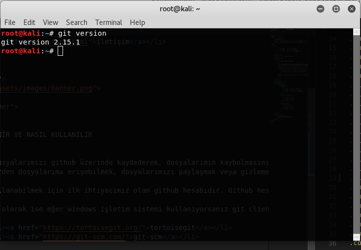
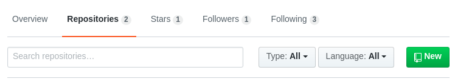
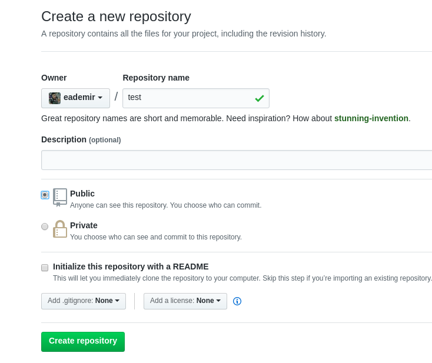
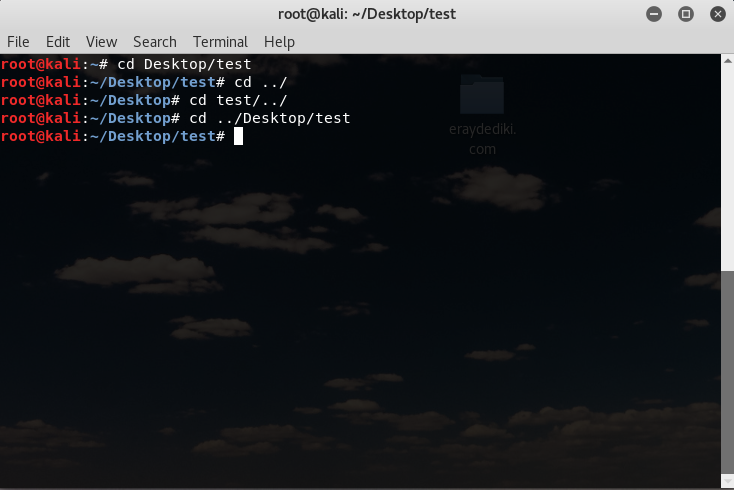
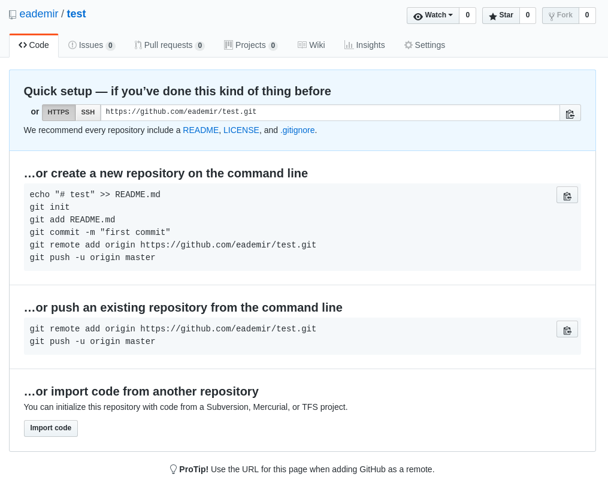
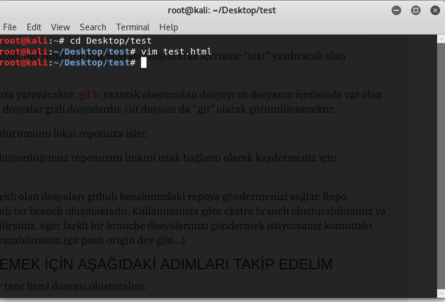
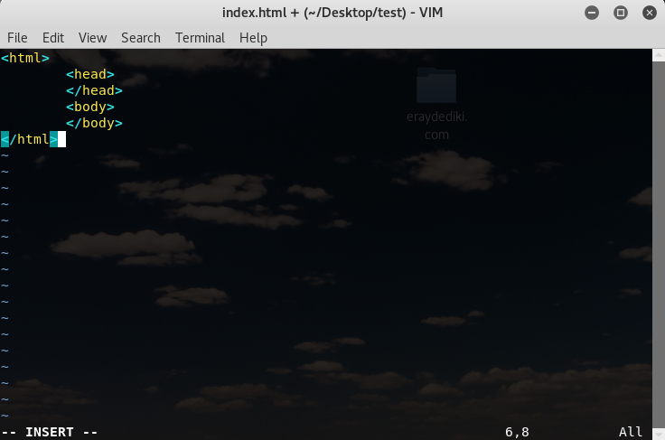
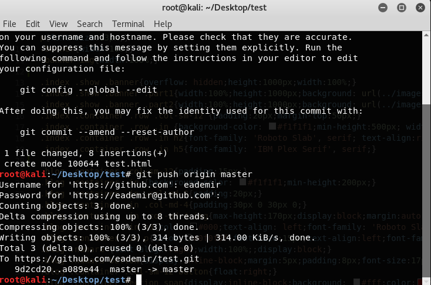
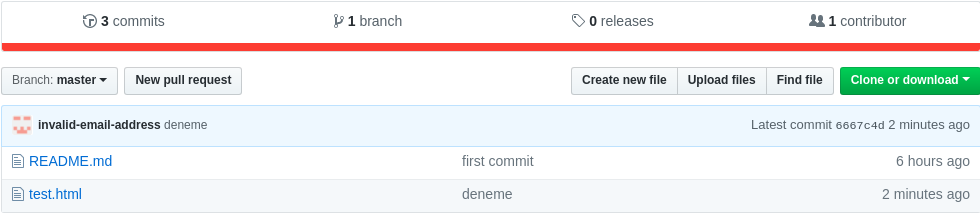
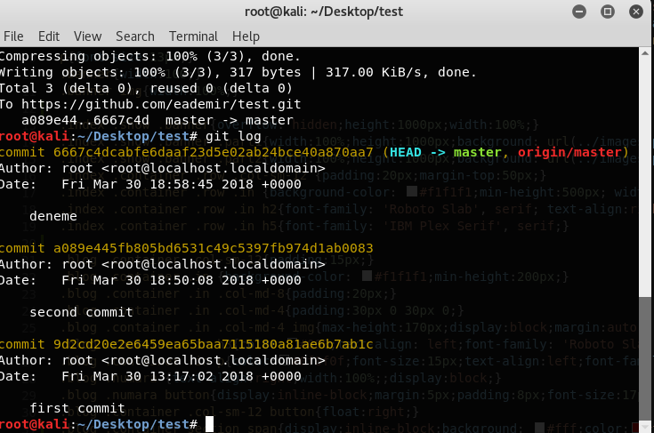

Git, dosyalarımızı github üzerinde kaydederek, dosyalarımın kaybolmasını engellemek, her yerden dosyalarıma erişebilmek, dosyalarımızı paylaşmak veya gizlemek gibi bir çok nedenle kullanılabilen birden fazla kişinin erişebileceği bir versiyon kontrol sistemidir.
Git kullanabilmek için ilk ihtiyacımız olan github hesabıdır. Github hesabınızı buradan oluşturabilirsiniz.
İkinci olarak ise eğer windows işletim sistemi kullanıyorsanız git clienti indirmektir. İki tür git clienti bulunur.
Eğer Linux işletim sistemi kullanıyorsanız terminalden sudo apt-get install git yazmanız yeterlidir.Windows işletim sistemi kullanıyorsanız "Git Bash" isimli uygulamayı açmanız gerekmektedir. Linux işletim sistemi için terminalden git kodlarını yazmanız yeterli olacaktır.
 "git version" yazarak gitinizin versiyonunu görüntüleyebilirsiniz.Git client indirdikten sonra ilk yapacağımız şeylerden birisi de github hesabınızdan repository oluşturmaktır. Bunu yapmak da için de önce git hesabınızdan açmanız gerekmektedir.
github hesabını giriş yaptıktan sonra üstteki "Repository" sekmesine tıkladıktan sonra sağdaki yeşil "New" düğmesine tıklamanız gerekmektedir.
Karşınıza gelen ekranda repo linkini belirlemelisiniz. Repo varsayılan olarak halka açık bir şekilde oluşmaktadır ama isterseniz gizli de oluşturabilirsiniz. (Gizli repo oluşturabilmek için aylık bir ücret ödemeniz gerekmektedir.)
Ben test isimli bir repository oluşturdum. Aşağıdaki yeşi "Creat Repository" düğmesine tıklayarak siz de repo oluşturabilirsiniz.
Oluşturma işlemini gerçekleştirdikten sonra karşınıza çıkan sayfadaki git komutlarını kullanarak ilk commitinizi gönderebilirsiniz.
git kodlarını yazmadan önce yapmanız gereken ilk şey kodlarınız için bir dosya oluşturmaktır.
Oluşturduğunuz dosya içerisinde işlem yapabilmek için git aracılığı ile o dosyaya ulaşmanız gerekmektedir. cd /dosya/yolu komutu ile git dosyanıza ulaşabilirsiniz.
cd yazdıktan sonra "../" yazarak bir önceki klasöre dönebilirsiniz. Eğer işlem yapmak istediğiniz klasöre gitmeden aşağıdaki işlemleri yaparsanız yanlış klasörünüzü veya tüm bilgisayarınızdaki dosyalarınızı repoya eklemek gibi bir hata yapabilirsiniz.
echo "# text" >> README.md komutu doyanızda README.md isimli bir text dosyası oluşturarak içerisine "text" yazdıracak olan komuttur.
git init dosyanızın içerisine yerel bir repo oluşturmanıza yarayacaktır. git ls yazarak oluşturulan dosyayı ve dosyanın içerisinde var olan dosyaları görüntüleyebilirsiniz. Başında nokta (.) olan dosyalar gizli dosyalardır. Git dosyası da ".git" olarak görüntülenecektir.
git commit -m "first commit" komutu projenin o anki durumunu lokal reponuza işler.
git remote add origin https://.... komutu ise githubta oluşturduğunuz reponuzun linkini uzak bağlantı olarak kaydetmeniz için kullanılmaktadır.
git push -u origin master komutu da lokal reponuzda ekli olan dosyaları github hesabınızdaki repoya göndermenizi sağlar. Repo oluşturulduktan sonra varsıyalan olarak "master" isimli bir branch oluşmaktadır. Kullanımınıza göre ekstra branch oluşturabilirsiniz ya da tek branch üzerinden çalışmalarınıza devam edebilirsiniz. eğer farklı bir branche dosyalarınızı göndermek istiyorsanız komuttaki master yerine göndermek istediğiniz branchin adını yazabilirsiniz.(git push origin dev gibi...)
Daha önceden oluşturduğumuz dosyanın içerisine bir tane html dosyası oluşturalım. İstediğiniz bir IDE aracılığı ile oluşturabilirsiniz ya da git bash/terminal ekranına vim ***.html yazarak vim editörü aracılığı ile git bash/terminal ekranından kodlarınızı yazabilir "esc" tuşuna bastıktan sonra da :wq yazıp "enter" tuşuna basarak dosyanızı kayıt edebilirsiniz.
 ls komutunu çalıştırarak klasörünüzdeki dosyaları görebilirsiniz.
İlk dosyamızı oluşturduk sıra bunu github hesabımızdaki repomuza işlemekte...
Yaptığımız değişikliği üç şekilde ekleyebiliriz.
Bunlardan birisi git add
Bu işlemden sonra dosyalarınızı yerel deponuza eklediniz. Uzak deponuza eklemek içinse aşağıdaki işlem adımlarını takip etmeniz gerekmektedir.
Daha öncesinde uzak sunucuyu yerel repomuza nasıl ayarlayacağımı göstermiştim. Eğer henüz ayar yapmadıysanız git remote add origin https://.... komutu ile ekleyebilirsiniz. Sonraki yapmanız gereken adım ise git push origin master yazarak yerel reponuzdaki dosyalarınızı sunucunuza göndermektir.
Aşağıdaki görselden test.html dosyasının eklendiğini görebilirsiniz.
git log komutunu çalıştırarak da daha önce branch üzerinde yapılmış olan commitleri listeleyebilirsiniz. Liste yukarıdan aşağıya doğru en yeniden en eskiye şeklinde sıralanacaktır.
Branch oluşturmak, onlarla çalışabilmek ve diğer bazı işlemler için ikinci git eğitimime beklerim.